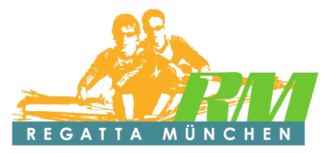

Software Engineer at Transloadit
Transloadit provides a cloud-based service for file uploading and processing at any scale and volume. In my role as a software engineer, I constantly work on improving the quality of our backend services and engage with our customers to assist them and ensure the best experience for our users.
transloadit.com
Project Lead at tus.io
tus is an open-source project with the goal of providing resumable uploads for everyone, so unstable connections and unreliable infrastructure do not cause data loss during file transfers. We specify a protocol for file uploads and provide software implementations for all common platforms to make getting started easy. As the project lead, I coordinate the development of new features and I am in constant exchange with the community to assist them with any problems.
tus.io

Ressort Leader at Regatta München
Regatta München is a non-profit organization that hosts national and international rowing competitions in Munich, Germany, and regularly welcomes hundreds participants from all around the world. Together with my team of up to 15 people, we are responsible for the electronic timekeeping of all rowing races during the events. This requires precise work and attention to detail in order to ensure a fair competition for every athlete. My duties include planing of the necessary materials, setting up the needed technical infrastructure and coordination of my team members.
regatta.de
My Knowledge
I am firm believer that one should choose the best tool for each task individually. There is not a single best programming language but instead the correct one depends on the specific situation. Therefore, I don't see myself bound to a certain set of programming languages or tools, and I am always eager to acquire new knowledge and extend my toolbox. That being said, on a daily basis I use Go, Node.js, JavaScript and Python running on Linux systems. I am also frequently in contact with Amazon Web Services and other cloud providers.
Contact Me
Feel free to reach out at
marius@accoplex.com. My code is at
github.com/acconut and I sometimes hang out on
twitter.com/acconut_ as well.